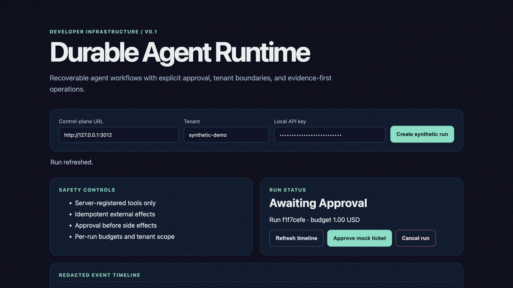
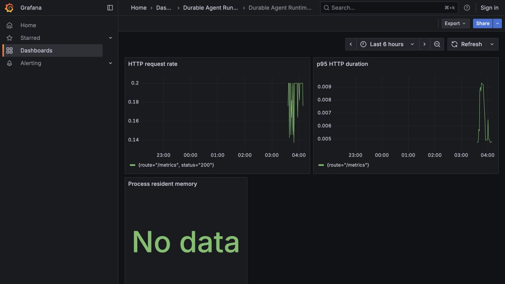

Durable Agent Runtime
A constrained, recoverable multi-tenant workflow runtime. Delivery is at-least-once; PostgreSQL idempotency protects committed mock side effects. This page links only to reproducible synthetic release evidence.
Verified evidence
System documentation
Synthetic console walkthrough
The workflow shown below pauses for approval and then resumes to one idempotent mock-ticket effect. It contains no real tenant data, credentials, provider response, or external side effect.

Observability snapshot

See the release-evidence checklist for scope and release restrictions.